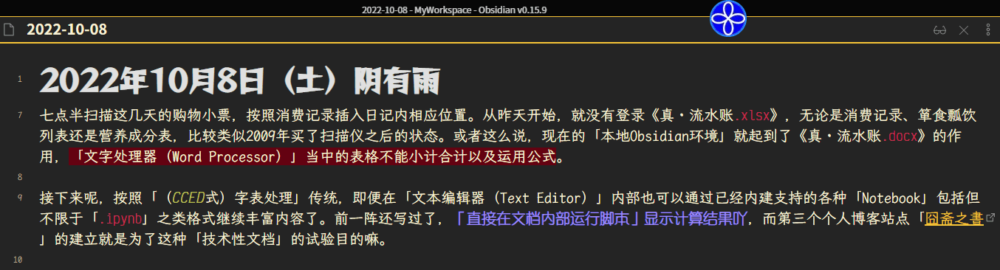
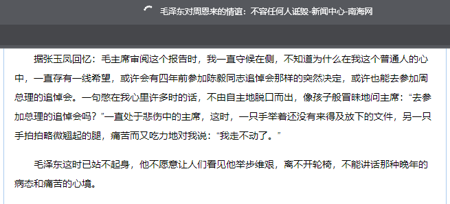
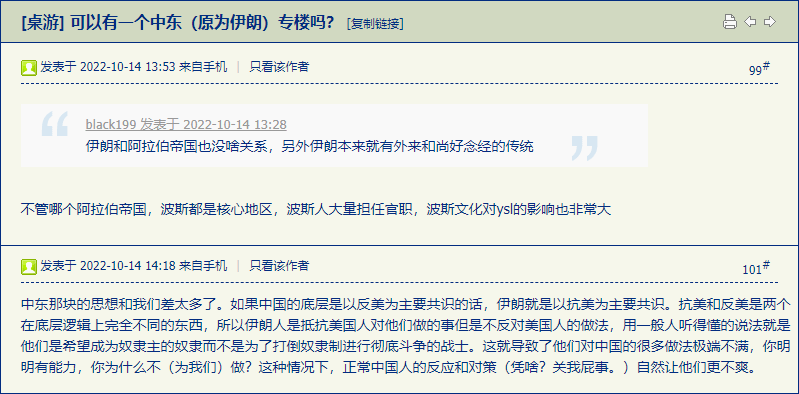

fanhan-inside
前情提要：
囧斋起居注・日记

一言以蔽之：老迈年高的计算机用户肯定反应过来了，当年面对「针式打印机」使用「点阵字体」的各种办公软件，尤其是「文字处理器」之类，在DOS下的界面，不就是「文本编辑器」的样子么？
所以看见自诩始终代表了最先进生产力的擅长用大拇指搓动智能手机屏幕以驾驶历史の五对负重轮奔驰在那十步一岗五步一哨夜不闭户路不拾遗兲子脚下首善之区国际一流和谐宜居之都市中心广场和十里长街之上将不自量力の螳臂挡车之跳梁小丑碾为齑粉的根红苗正忠君爱国童年才俊叫嚣「每个百善の新时代都有大批掉队者，这帮万恶的旧社会余孽已经遭遇“新731部队”骨干投毒下药导致双下肢浮肿且筋骨皮肉刺痛并且饥寒交迫……已经走不动了」的时候，就要考虑到「革命导师圣卡尔の反革命导师团黑格尔等先贤」谆谆教导人民群众们说「历史是螺旋上升的否定之否定」也就是场内四百米跑道上一票下半身肌肉棒子在众目睽睽之下一圈圈绕回原点还美其名为「突破」，或者场外环×自行车赛之类乍一看大批租用昂贵设备的耗材们感慨海阔天空实际上不过是大号瞎驴拉磨而已必将被赛事组委会打回原形。
上面这段措辞比较委婉，直说了吧：目前以「Visual Studio Code」为首的大批「插件架子型文本编辑器の五颜六色纯文本型」用户界面，就是当年的DOS环境下或者如今的怀旧模拟器当中「经典共识の文字处理器工作状态⸺以及部分打印预览」的用户界面。
最起码，把Markdown各种扩展都打开的「源码模式」，就酷似上世纪八九十年代曾经在小范围内流行并获得一致好评的“CCED”字表处理软件，其处理表格的能力要超过同时期的“WPS”，可以类比为运行脚本的「.ipynb」或其它功能类似的环境下「MyST Markdown」之类格式。
说过了「不忘初心牢记使命」，本来就是为了我个人的「富文本」码字内容在本地和各个站点及托管平台之间联机同步的目的，才会关注表现形式。运用「文本编辑器（Text Editor）」当中可通过git等版本管理系统追踪的比特流实现一部分通常运用「文字处理器（Word Processor）」才能实现的效果，方针政策路线计划从来都是明确的。如今看赛博朋克英特纳雄耐尔主义者紧密团结在以W3C为核心的互联网推荐标准中央周围，依托大手情报工学会社提供的开放共享之伎俩，就快要完成了。
总之，在涉及「“下一步”往哪里迈」之类问题的时候，不能使用「走一步看一步」之类耍赖字眼搪塞。
说出这种话的当事人只是在掩饰自己那孤陋寡闻愚蒙等诮的井底之蛙兼不学无术胸无点墨的傻哔形象，还会运用「“海里有人”“海边有人”“手眼通中央军委/政法委”」的人脉勒令枪杆子狼牙棒全面出动还外聘江湖好汉草莽豪杰乃至地痞流氓泼皮无赖担任劳务派遣，在十步一岗五步一哨夜不闭户路不拾遗兲子脚下首善之区国际一流和谐宜居之都大街小巷的现实当中，以及繁荣的简体中文互联网上各大宣传阵地直至十亿网民自留地的自建房当中，全面筛查儿童文学名篇《皇帝的新衣》并以「政治敏感」理由「亦当删去」呢。
fanhan-inside
长话短说，今天「Obsidian 1.0.0」发布⸺说过了因为「日记」是其核心功能所以在丢失过去几年本地草稿的情况下直接挑一个最接近需求的环境继续，曾经的我如同大批前辈和同龄人那样可以使用真・文本编辑器配合命令行工具干活的，如今在日常条件下为了工作效率而没有那个必要而已⸺已经更新了，部分插件和主题还没有与时俱进，目前正在适应中。
最近身体情况堪忧，本来以为手头略微宽裕于是营养能跟得上（实际上是在恶补饥荒两个月后的消耗，众所周知先皮包骨再浮肿并不是什么健康状态）会有好转，但是反而恶化了。之前几天「浑身疼，坐不住」于是几乎啥也没干，坐不住只能躺着也就罢了，上半身出问题了导致无法「如臂使指」于是连调整样式的体力活也搞不定，倒是码字的构思还能在脑壳里推进。
如果说去年11月4日开始的状态是「红条见底」，那么现在已经看不见红条或者说按比例折算不足一个像素于是无法显示了。之前总结过，即便按照个人博客站点更新动态的记录复盘也能判断出2019年是脑力巅峰⸺到处谈笑风生的同时《设定集》重新开始连载⸺并且体力下降没有太多负面影响。而自打去年春节开始，身体情况每况愈下，到11月2-4日完成周边江湖好汉草莽豪杰地痞流氓泼皮无赖放话「出来混要讲信誉，说杀你全家就杀你全家」的既定方针政策路线计划「死光一户口本」上倒数第二个日程安排的时候，已经「走不动了」：
范某截图备份于此

但是当时还在死撑⸺因为外表看不出来，所以不想被人看出来⸺平移还算勉强，上下运动的时候非常费劲，迎面骨那块肉使不上劲导致无法翘起脚面只能耷拉着拖动。而到了今年8月25日半夜断电凌晨出门（于葡萄架社区出行路上遭遇中年妇女迎面挑衅）时已经很难穿上鞋袜了，随后一段时间外观明显，并且症状已经无法掩饰。而步履蹒跚「生理上寸步难行」被周边各色人等（遑论24×7全方位巡查监视无死角的摄像头后的观众朋友和窃听器后的听众朋友）获知，才有大批针对性的「趁我病要我命」相关操作⸺包括但不限于「没有人身自由就没有财产安全」之积极的财政政策和稳健的货币政策⸺最近谈笑风生当中尽量轻描淡写的备份相关情报，此处不再重复。
由于最近一直没有使用之前改装Ubuntu的笔记本（只是偶尔联机备份已经托管的各个repo/vault），于是惦记着立足于现有技术条件和装备尽量运用捉襟见肘的有限资源，这几天再次重装笔记本恢复到2010-2012年技术环境：Win7日语版，（还能装上的）微软全家桶，以及其它部分工具。
这是为了测试的目的，这个（如无意外不会再次折腾的）「保留环境」很合适，因为浏览器渲染页面与操作系统关系不大。或者这么说，只要Google/Mozilla愿意，哪怕Win2K/XP上都能实现当代浏览器最新版本的效果。但是没有必要，因为在赛博朋克英特耐雄耐尔主义者视角看来「重新发明轮子」并不是个好主意，能够调用操作系统和第三方组件提供的经由W3C等权威机构认证的功能，当然拿来主义⸺大手情报工学会社故意不支持则例外，比如微软强推Win10的时候对Win7更新的各种小动作⸺是更好的选择。
而到了Win7终止支持的时间点，绝大部分个人博客站点使用的伎俩在客户端都可以正常显示。例外就是之前提到的今年才获得普遍支持的CSS特性「--font-synthesis」，但是通过精心选择字体而影响不大，况且一直都有「测试默认配置」显示效果的目的。
举个具体的例子，就是最近在「请增加「双倍全角横线」U+2E3A（TWO-EM DASH [⸺]）字符」提到的波折号，W3C推荐的方案就没有获得操作系统与字体制造商的普遍支持，最起码最近码字中使用的高举紧跟字符，在刚配置好的笔记本的浏览器上显示为「豆腐」⸺或许「Google Noto」都没来及支持，还需要进一步确认。
而不那么迫切的需求，比如在「Support for Greek Extended (U+1F00 - U+1FFF) requested」当中提到的扩展希腊字母，已经通过其它方式（专用网络字体）解决了一部分。并且考虑到项目组日理万机无暇周览⸺比如今天本人刚刚收到的消息称「2023Q3」支持简体和繁体中文⸺总有些任务优先级更高而用户更加迫切需要，于是可以暂且保留现状。这种情况下，可以把最初也是迄今为止唯一“权威”的个人博客站点「希帕索斯永垂不朽」之上的所有内容当成素材⸺之前提到过早期博客篇目有「过度样式化」的倾向，那就是用自己的码字内容作为试验品的表现⸺重新设计并实现更加合理且简洁的样式了。
实际上第二个声明为「Blog Plus Style Less
」的个人博客站点「囧斋」就有这种目的，但是针对性并不明显。由于「.less」代码可以通过浏览器加载ECMAScript脚本实时解析，于是保证网络传输数据量最小。而受限于内容（重构之前的部分准备工作），形式也有所限制。
那么再次重构的目标，之前提到了，就是号称最全面且功能最强大的「SCSS」预处理器，真・本地编译为CSS之后再加以运用。或许会再开一个博客试验，目前客观条件下还没有决定。而目的是测试技术性文档发布事宜的「囧斋之書」站点，由于最近已经涉及到「可执行代码的文档」格式及工具相关内容，乃至大批样式（如告示牌“Admonition/Callout”）的适用性，暂且决定搁置。
总之，在已经知道「路在何方」的前提下，目前「路在脚下」的行动，是在笔记本「保留环境」当中通过尽量小的系统配置（包括但不限于网络字体）而正常显示（有必要的话可以大刀阔斧修改的）个人博客内容，而服务的对象则是所有「浏览器前的读者朋友」⸺想必砥砺奋进十年来乃至「连“十九年七闰”都不知道还推算呢」学术公案十三年来甚至上溯到在幽州城区权威机构注册账户四十余年来24×7全方位巡查监视无死角的「摄像头后的观众朋友与窃听器后的听众朋友」肯定会采取针对性「撒谎偷窃诈骗」「暗杀抢劫破坏」军事行动。
顺便，由于身体情况堪忧，才会为了码字而抓紧时间体验生活，比如前几天买了一堆（国产）铁盒雪茄，因为判断「烟斗」等不及了。原则在「没有调查就没有发言权，没有体验就没有码字脸」当中提到了，先解决有无问题，再考虑优劣问题，还要量力而行。
具体到最近「自残型体验」（这次可不是因为开心才抽烟喝酒啥都吃）所针对的场景，在《范版西幻设定集》之十七〈冠由下生乱自上作〉当中，几乎全篇都是。尤其是其中英格兰大手名校毕业生爱尔兰裔情报工作者「馆子里抽烟喝酒耍钱顺便谈论北溪」的场景，也就在眼下有实时效果⸺角色「尼摩船长」的业务也包括黑海（土耳其溪）⸺时过境迁，将来（估计短期内不太可能）即便烟斗到手也未必有如此凑巧的心情和语境了。
顺便补充屎绿配色的国际化大都市「华语第一精日论坛」当中出现的「绿色基因」相关情报兼素材：
范某截图备份于此

相关内容的背景遍布整个《卡壳世界》，而特别的切入点及剧情线，可以参考《范版西幻设定集》之十九〈昔在上圣昭事百神〉，同样几乎全篇都是。类似的体验，就是前一篇日志当中提到的「十九届七中全会的精神立竿见影的反映到囧斋周边环境当中」。至于具体细节，那里没有展开解释，这里也一样。